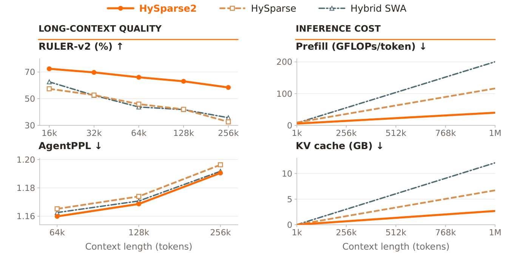
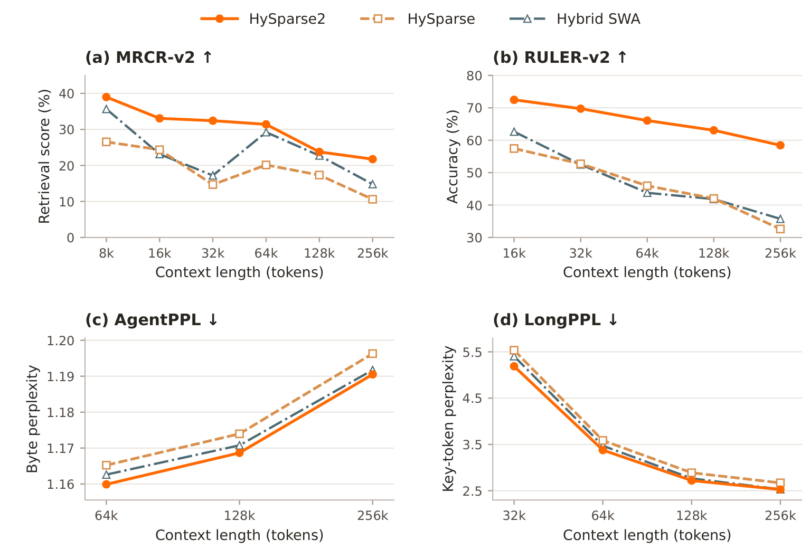
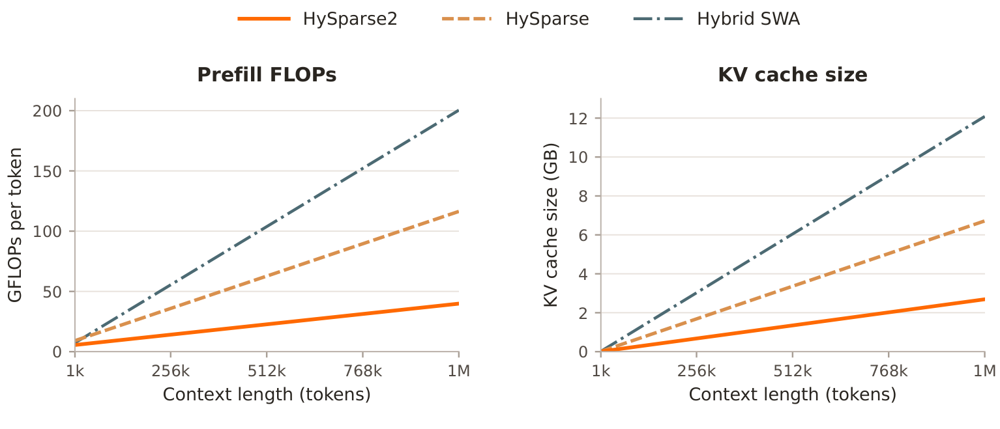
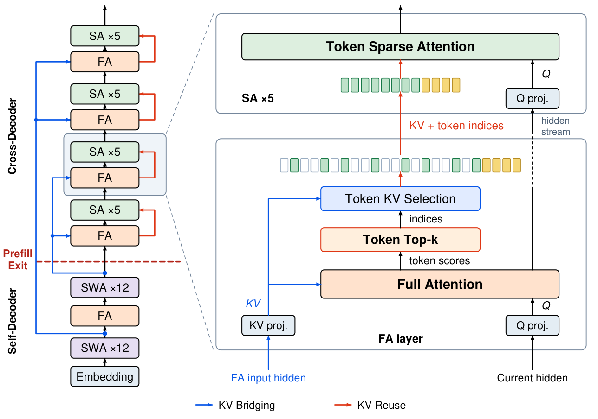

多轮智能体的上下文膨胀主要来自工具返回：一次调用带回的检索结果或执行日志，往往比产生它的动作长得多，预填算力与 KV cache 双双被推高。
小米 LLM-Core 的 HySparse2 把 YOCO 式跨层 KV 共享嵌进混合稀疏注意力，让 cross-decoder 的 KV cache 全部由 self-decoder 隐藏状态生成，预填只跑半个模型就能退出。
智能体推理把长上下文与多轮交互叠在了一起。每一轮里，一个短的动作或工具调用可能带回长得多的搜索结果、执行轨迹或文档，这些内容必须先做预填，解码才能继续。观测不断累积，智能体要在持续膨胀的历史里检索并合并证据，注意力计算和 KV cache 存储随之上升。这类负载要求高效的预填、紧凑的 KV cache，以及准确的长上下文检索。
HySparse 用全注意力层与稀疏注意力层交替的方式解决长上下文效率问题。每个全注意力层都向后继稀疏层提供选择索引和一份 KV cache，在不蒸馏辅助 indexer 模块的前提下降低注意力计算量与 KV cache 存储。但对智能体推理来说，HySparse 在缩短预填、进一步压缩 KV cache、提升检索精度三个方面仍留有不小空间。
HySparse2 在 HySparse 基础上引入两级 KV 共享。参照 YOCO，骨干网络分成 self-decoder 与 cross-decoder 两段：self-decoder 把全注意力与滑动窗口注意力（SWA）混合起来，cross-decoder 把全注意力与稀疏注意力混合起来。外层 KV Bridging 把两个 decoder 里的全注意力层连起来，每个 cross-decoder 全注意力层用各自的 K/V 投影，作用在对应的 self-decoder 全注意力层的输入隐藏状态上。内层 KV Reuse 沿用 HySparse 的做法，在同一个混合块内共享 KV cache 与选择索引。
两处改动同时改善了精度与效率。其一，用 token 级选择替代块级选择，把稀疏注意力预算更精确地分配给相关 token。其二，用一段强制的近期 token 窗口替代稀疏层里独立的 SWA 分支，让局部与全局 token 共用同一份共享 KV cache。所有 cross-decoder 的 KV cache 因此都能由 self-decoder 的隐藏状态构建，预填可以在 self-decoder 之后就退出。
在相同数据与训练计划下，用 80B-A3B MoE 模型对比 HySparse2、HySparse 与 Hybrid SWA。预训练之后，HySparse2 通用能力基本持平，长上下文检索更强。轻量后训练之后，MRCR-v2 与 RULER-v2 平均分相对 HySparse 分别提升 11.30 与 19.81 个百分点，在 256k 以内的所有评估长度上，AgentPPL 与 LongPPL 都低于两个基线。在 1M token 上，预填 FLOPs 相对 HySparse 与 Hybrid SWA 分别降低 2.92 倍与 5.02 倍，KV cache 也更小。消融显示，在相同注意力预算下 token 级选择能提升检索，KV Bridging 则保持了基本相当的质量。
长任务、多轮的智能体让推理越来越由输入主导，工具返回的内容常常比产生它的动作多出大量 token。只降低注意力开销，并不能消除把这些 token 在骨干网络里前向传播所需的计算。跨层 KV cache 共享可以同时降低 KV 存储与预填计算：YOCO 用一个 self-decoder 构建跨 cross-decoder 层共享的全局 KV cache，让预填阶段的 cache 构建在 self-decoder 之后退出；Gemma 3n 采用相关的跨层 KV 共享提升预填效率。HySparse 在混合稀疏注意力块内部做跨层共享，每个全注意力层把自己的全局 KV cache 和 top-k 块索引共享给后续稀疏注意力层，但预填仍要执行全部层。HySparse2 把 YOCO 式结构并入 HySparse，在降低注意力计算与 KV 存储的同时缩短预填路径。
智能体负载需要更紧凑的 KV cache。KV cache 压缩有四个维度：head、序列、层、精度。head 级方法用 GQA/MQA 共享 KV head，或像 MLA 那样把 KV 表示压进潜状态；序列级方法把多个 token 压成更少的 cache 条目；层级方法在层之间共享 KV cache；精度级方法降低缓存 key 与 value 的数值精度。此前工作集中在 head、序列、精度三个方向上的层内压缩，HySparse2 则通过 KV Bridging 与 KV Reuse 推进跨层共享。
稀疏注意力把每个 query 限制在一部分 KV 条目上，以此降低长上下文注意力开销，选择粒度在建模精度与推理效率之间存在固有取舍。HySparse 采用块级稀疏作为折中：评估显示精度损失不明显，规则的块结构又便于高效 kernel 实现。但现代智能体负载是长任务、多轮轨迹，需要从很长的历史里精确检索，在这类模式下块级选择的精度劣势明显，token 级选择能更如实地取回相关证据，近期稀疏 kernel 的进展也让 token 级实现变得可行。HySparse2 因此改用 token 级稀疏，做更精确的上下文选择。
骨干网络分成 self-decoder 与 cross-decoder，两者都用混合注意力：self-decoder 把全注意力与滑动窗口注意力混合，负责局部建模；cross-decoder 把全注意力与稀疏注意力混合，负责全局检索。两级 KV 共享体现在，外层 KV Bridging 通过逐层投影，用对应的 self-decoder 隐藏状态构造每个 cross-decoder 全注意力层的 KV cache；内层 KV Reuse 让稀疏层复用同一混合块内全注意力层的 KV cache 与选择索引。

KV Bridging 只在 self-decoder 与 cross-decoder 的全注意力层之间工作。取一对全注意力层 i 与 j，i 在 self-decoder，j 在 cross-decoder，记两者的输入隐藏状态分别为 Hself(i) 与 Hcross(j)。cross-decoder 第 j 层的 key 与 value 由 self-decoder 第 i 层的隐藏状态经本层的 K/V 投影得到，query 则由本层当前的隐藏状态 Hcross(j) 经 Q 投影得到。
每个 cross-decoder 全注意力层都有自己的 K/V 投影，共享同一隐藏状态来源的层仍然构造出各自的 KV cache。每层也保留独立的 Q 投影，作用在自己当前的隐藏状态上。KV Bridging 允许两个 decoder 使用不同的混合注意力比例，一个 self-decoder 全注意力层可以供应多个 cross-decoder 全注意力层。
相对 HySparse，HySparse2 做了两处关键改进：改用 token 级稀疏选择，去掉独立的 SWA 分支。
在 HySparse 的预训练评估里，块级选择没有明显精度劣势，但它在多轮、长上下文的智能体任务上劣势明显。HySparse2 因此对全注意力层中单个 token 做 top-k 选择，后续稀疏层直接复用被选中 token 的 KV 条目。
去掉独立 SWA 分支之后，局部建模改由强制窗口承担：最近的 token 窗口总是被选中，随后才是窗口之外得分最高的 token。两组选择都从全注意力 KV cache 里读取，再由后续稀疏注意力层复用。
这个设计还让预填阶段可以在 self-decoder 之后完整退出。cross-decoder 里独立的 SWA 分支需要用自己隐藏状态的投影构建一段后缀 KV cache，而这又依赖前层不断扩大的隐藏状态集合，并随深度线性增长。这种级联的 SWA 依赖要求 cross-decoder 处理远长于窗口尺寸的 token 后缀，这些状态要么在预填阶段算出来，导致 cross-decoder 无法被整体跳过，要么用 bounded replay 之类方法近似。HySparse2 从结构上去掉了这层依赖，预填阶段不需要任何 cross-decoder 计算，去掉该分支也省掉了 gated 基线里那部分独立投影的参数开销。
HySparse2 与 HySparse 都保留少量全注意力层，全注意力对模型质量仍然重要。这些层同时充当 indexer，用精确的注意力分数为后续稀疏层提供 oracle 级的 token 选择，从而支持原生端到端训练，不需要单独的 indexer，也不需要为训练 indexer 引入辅助蒸馏目标。代价是全注意力计算昂贵，所以它的层占比保持很小，在 HySparse2 里预填的 KV cache 构造只需要一个全注意力层。参照近期的稀疏化方案，后续可以在后训练阶段用轻量 indexer 加稀疏注意力近似这些保留的全注意力层；也可以让架构把更少算力分给全注意力、更多分给稀疏注意力，例如减少全注意力层的 query head 数、增加稀疏注意力层的 query head 数。
在预填与解码分离的部署下，HySparse2 的预填节点只承载 self-decoder 和 KV Bridging 的投影。对 49 层的模型来说只需部署前 25 层，预填节点的显存需求近乎减半。在较高的 SWA 与全注意力比例下，预填阶段 self-decoder 只有一层做全注意力。cross-decoder 全注意力层的 KV cache 也在预填节点上算好再传给解码节点，因为投影后的 KV cache 比源隐藏状态更小。
预训练阶段，HySparse2 用单个 MTP 层，条件在 self-decoder 与 cross-decoder 边界处的隐藏状态上，帮助收敛。后训练阶段这个 MTP 层可以换成更大的 DFlash 式 drafter，条件在同一批隐藏状态上，它们出现得更早，可以支撑异步的起草与验证。训练更大的 drafter、把异步执行与验证反馈协调起来，留待后续工作。
对比对象是 HySparse 与 MiMo-V2 系列使用的 Hybrid SWA，比较覆盖模型表现、预填 FLOPs 与 KV cache 存储，并对稀疏选择粒度、强制局部窗口、KV Bridging 做消融。token 级选择针对智能体场景下更强的长上下文精度，同时不牺牲效率；强制局部窗口与 KV Bridging 则针对更低的预填开销，同时保住模型质量。
除特别说明，实验都用 80B-A3B MoE 模型：49 层 Transformer，隐藏维度 2,048，采用简化版 mHC 变体，残差混合矩阵固定为单位矩阵。
三个模型只在注意力设计上不同。全部层都用全注意力是评估中最强的参照；选择混合模型保留多少全注意力层时，要避免与这个基线出现明显精度落差：Hybrid SWA 保留 9 个全注意力层，再少会显著掉分，HySparse 与 HySparse2 都只用 5 个全注意力层，精度仍与全注意力基线相当。Hybrid SWA 与 HySparse 用 GQA，HySparse2 用 MQA，KV cache 更小，token 稀疏注意力 kernel 效率也更好。
HySparse2 的 self-decoder 中，SWA 层用部分旋转位置编码（RoPE），旋转维度 64、base 10,000，全注意力与稀疏注意力用 NoPE，因此长上下文扩展时不需要调整 RoPE。三套配置里，所有稀疏层与 SWA 层都用 sigmoid 输出门与可学习的逐 head sink 偏置。HySparse2 用 token 级选择，强制 128 个局部 token 与 1,024 个全局 token；HySparse 以 64 token 为块选 1,024 个全局 token，并通过 gated fusion 把稀疏注意力与独立的 128 token SWA 分支结合；Hybrid SWA 用 128 token 的滑动窗口。
80B-A3B 模型在 32k 上下文长度下预训练约 500B token。轻量后训练阶段再增加约 100B token，把智能体数据引入训练混合，并把上下文长度扩展到 256k。两个阶段内三个模型共享同一数据混合与训练计划。优化器用 Muon 配 WSD 调度，预训练峰值学习率 1e-3，后训练 5e-5。整体对比同时给出预训练与后训练结果，消融只报预训练结果。
预训练评估覆盖知识（MMLU、MMLU-Redux、MMLU-Pro、C-Eval、CMMLU、TriviaQA）、推理（BBH、MATH、DROP、GSM8K、ARC-C、HellaSwag、WinoGrande）、代码（HumanEval+、MBPP+、Repo Code PPL）与长上下文（RULER、NoLiMa）。Repo Code PPL 是内部基准，在带跨文件依赖的长代码仓库上报告字节困惑度，因此也能探测长上下文建模能力。
轻量后训练之后，重点看多轮检索与智能体轨迹上的长上下文似然。AgentPPL 是内部基准，基于多轮智能体轨迹构建，在 1,000 条轨迹的推理、工具调用与回复片段上测量字节困惑度。LongPPL 在依赖长距离上下文的选定 token 上测困惑度，样本是 349 个智能体轨迹与长上下文任务样本。MRCR-v2 用 2、4、8 个 needle 测多轮检索，RULER-v2 覆盖 12 个检索与问答子任务，GraphWalks 评估多跳图遍历。
| 模型 | 全注意力层数 | Heads (Q/KV) | Head dim. (QK/V) |
|---|---|---|---|
| Hybrid SWA | 9 | 64/4 | 192/128 |
| HySparse | 5 | 64/4 | 192/128 |
| HySparse2 | 5 | 64/1 | 256/256 |
预训练阶段，HySparse2 的通用能力与两个基线总体相当，最明显的增益在长上下文建模：RULER 与 NoLiMa 都是最高，相对 HySparse 分别提升 5.88 与 9.49 分；Repo Code PPL 最低，为 1.1570，略优于 HySparse 的 1.1588 与 Hybrid SWA 的 1.1578。单个通用任务上互有胜负，HySparse2 在 BBH 与 MMLU-Pro 上更强，HySparse 在 DROP 上仍占优。
后训练阶段用 MRCR-v2 与 RULER-v2 评检索，用 AgentPPL 与 LongPPL 评长上下文似然。检索平均分对各上报的上下文长度等权，困惑度曲线按上下文长度分组。
在所有评估长度、四项指标上，HySparse2 都领先两个基线，增益最大的是检索：相对 HySparse，MRCR-v2 与 RULER-v2 平均分分别提升 11.30 与 19.81 分，相对 Hybrid SWA 分别提升 6.44 与 18.65 分。到 256k 时优势依然明显，HySparse2 的 RULER-v2 达到 58.45，HySparse 为 32.61，Hybrid SWA 为 35.74。AgentPPL 与 LongPPL 在评估范围内也都更低，说明检索增益伴随的是长智能体轨迹与依赖上下文的 token 上更好的似然。AgentPPL 随上下文长度上升，LongPPL 反而下降，这一反差来自额外上下文的两种相反效应：更长的上下文为 LongPPL 的关键 token 暴露了更多相关信息，同时也带来更多中间轮次与工具输出，让多轮轨迹里相关证据更难被检索到。

预填计算与 KV cache 的对比在 80B-A3B 配置、FP8 KV cache 存储下进行，覆盖 1k 到 1M token 的各上下文长度。
在 1M token 上，HySparse2 的预填 FLOPs 相对 HySparse 降低 2.92 倍、相对 Hybrid SWA 降低 5.02 倍；KV cache 只占 2.69 GB，HySparse 为 6.72 GB，Hybrid SWA 为 12.09 GB。

| 任务 | Hybrid SWA | HySparse | HySparse2 |
|---|---|---|---|
| 知识 | |||
| MMLU | 61.48 | 64.48 | 63.92 |
| MMLU-Redux | 63.96 | 68.44 | 67.50 |
| C-Eval | 65.08 | 67.09 | 67.90 |
| CMMLU | 67.41 | 69.97 | 69.90 |
| TriviaQA | 60.59 | 60.67 | 59.67 |
| 推理 | |||
| BBH | 60.14 | 61.93 | 64.29 |
| MMLU-Pro | 36.12 | 35.74 | 37.56 |
| MATH | 36.18 | 36.14 | 34.32 |
| DROP | 60.90 | 63.78 | 58.99 |
| GSM8K | 64.44 | 64.14 | 61.94 |
| ARC-C | 75.51 | 79.18 | 77.82 |
| HellaSwag | 79.38 | 79.19 | 79.54 |
| WinoGrande | 73.72 | 74.19 | 71.82 |
| 代码 | |||
| HumanEval+ | 35.98 | 34.76 | 34.15 |
| MBPP+ | 55.56 | 52.65 | 52.65 |
| Repo Code PPL 越低越好 | 1.1578 | 1.1588 | 1.1570 |
| 长上下文 | |||
| RULER | 88.71 | 84.89 | 90.77 |
| NoLiMa | 30.13 | 40.27 | 49.76 |
块级选择用 64 的块大小。两个变体骨干布局相同，都选 1,024 个全局 token，并保留独立的 128 token 局部窗口。
在相同注意力预算下，token 级选择在长上下文检索与图推理上有明显增益：RULER-v2 提升 6.57 分，两 needle 的 MRCR-v2 提升 8.14 分，GraphWalks 提升 5.55 分。这些增益出现在 32k 训练上下文之内。
智能体轨迹反复交替出现推理、工具调用与返回的观测，回答所需的信息可能散落在多轮之间，还夹杂角色分隔符和其他标识边界的特殊 token。在固定注意力预算下，选一个块来留下这类 token，会同时把容量花在它的邻居上；token 级选择可以把预算分配到上下文中任意单个位置，检索与图推理上的增益与这一解释一致。
| 任务 | Block | Token |
|---|---|---|
| 预训练 | ||
| BBH | 61.93 | 60.70 |
| MMLU-Pro | 35.74 | 36.97 |
| NoLiMa | 40.27 | 38.43 |
| 长上下文（不超过 32k） | ||
| RULER-v2 | 49.56 | 56.13 |
| MRCR-v2（2 needle） | 12.94 | 21.08 |
| GraphWalks | 29.38 | 34.92 |
对比稀疏层里处理局部上下文的三种方式：独立的 gated 128 token SWA 分支（Gated SWA）、去掉独立 SWA 分支（No SWA）、把最近 128 个 token 强制塞进稀疏选择（Forced SWA）。三者骨干、KV Bridging 与混合 SWA self-decoder 相同，只在 cross-decoder 稀疏注意力如何处理局部上下文上不同。评估在 32k 训练上下文内做预训练结果对比。
局部信息对稀疏注意力是必要的：去掉局部分支（No SWA）总体会让模型表现下降，而 Forced SWA 在若干任务上与 Gated SWA 相当。Forced SWA 的 RULER、RULER-v2 与 GraphWalks 最好；相对 Gated SWA，GSM8K 低 5.08 分、MRCR-v2 低 4.99 分，LongPPL 高 1.50%。这个代价可以接受，Forced SWA 省掉了额外投影参数，也不需要局部 KV cache，从而让预填早退成为可能。
| 任务 | Gated SWA | No SWA | Forced SWA |
|---|---|---|---|
| 推理 | |||
| BBH | 62.23 | 60.11 | 62.25 |
| MMLU-Pro | 39.15 | 37.19 | 38.12 |
| MATH | 35.82 | 33.82 | 33.38 |
| DROP | 60.06 | 58.94 | 56.85 |
| GSM8K | 64.52 | 60.35 | 59.44 |
| ARC-C | 81.06 | 79.01 | 78.41 |
| HellaSwag | 79.85 | 78.23 | 78.42 |
| WinoGrande | 73.09 | 73.95 | 72.85 |
| 长上下文（不超过 32k） | |||
| NoLiMa | 37.62 | 38.37 | 36.16 |
| RULER | 88.19 | 84.55 | 89.84 |
| RULER-v2 | 53.66 | 54.62 | 55.98 |
| MRCR-v2 | 27.66 | 20.73 | 22.67 |
| GraphWalks | 35.39 | 36.48 | 37.13 |
| LongPPL 越低越好 | 6.8807 | 7.1307 | 6.9838 |
KV Bridging 首要目标是加速预填，同时保住模型质量。为了检验它是否可扩展，在 290B-A8B 模型、约 1.8T token、32k 上下文的设置下，分别训练带与不带 KV Bridging 的版本。
带 KV Bridging 的版本质量与不带的基本相当：MMLU 与 TriviaQA 略有提升，RULER 只差 0.31 分，Repo Code PPL 几乎不变，LongPPL 从 3.6053 改善到 3.4202；BBH 与 GSM8K 各降约 1 分，DROP 从 71.37 降到 68.17。
连接方式上，在共享同一混合骨干与预训练配方的 80B-A3B 模型上对比 KV Bridging 与 KV Mirror。KV Mirror 用 U 形连接把首尾层按逆序配对（1 对 n、2 对 n-1 等），KV Bridging 只连 self-decoder 与 cross-decoder 里的全注意力层。两种方式都通过重新投影源隐藏状态来形成目标 KV 表示。

KV Bridging 在训练的大部分时间里更强，最终到 87.65，KV Mirror 为 81.28。原因在于全注意力层的状态是更好的来源：全注意力通过注意力分数在整个可见上下文上反向传播，SWA 则把这些直接连接限制在局部窗口内，更密的监督让投影出的表示保留更多全局信息。
| 任务 | 不带 KV Bridging | 带 KV Bridging |
|---|---|---|
| MMLU | 72.68 | 72.80 |
| TriviaQA | 73.32 | 74.10 |
| BBH | 70.65 | 69.57 |
| DROP | 71.37 | 68.17 |
| GSM8K | 77.63 | 76.65 |
| Repo Code PPL 越低越好 | 1.1351 | 1.1353 |
| RULER | 96.32 | 96.01 |
| LongPPL 越低越好 | 3.6053 | 3.4202 |
参考：https://arxiv.org/abs/2609.26368